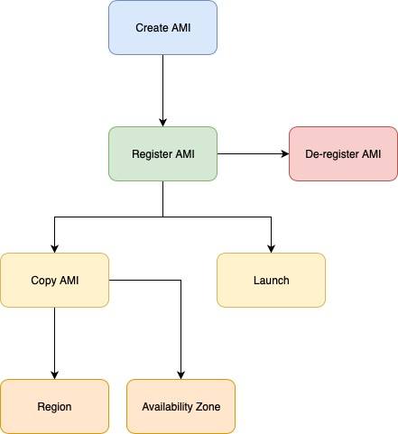
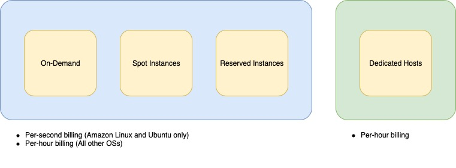
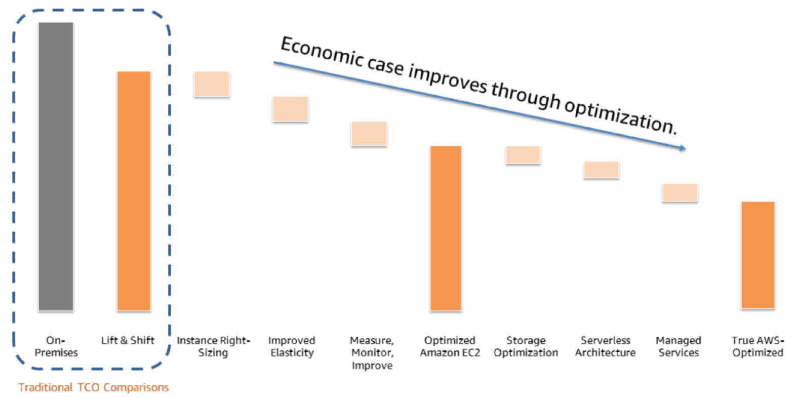
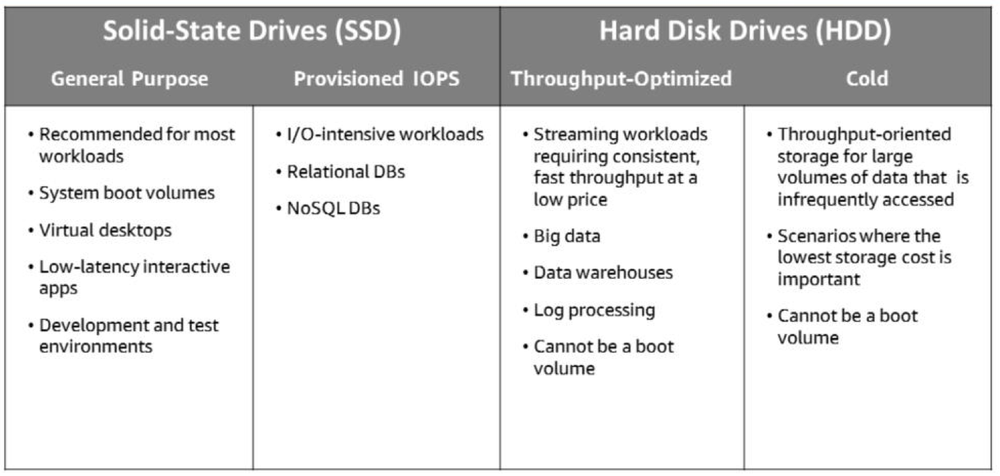
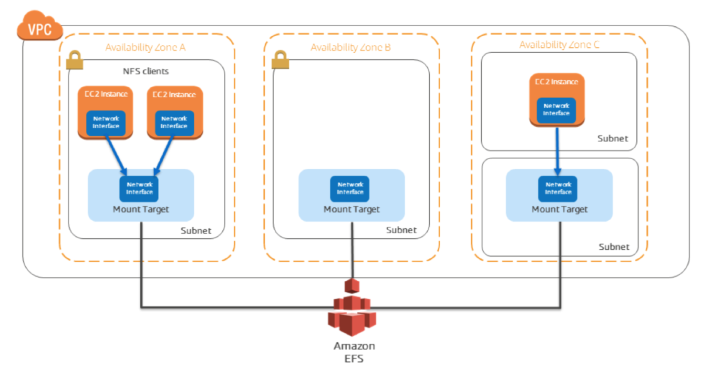
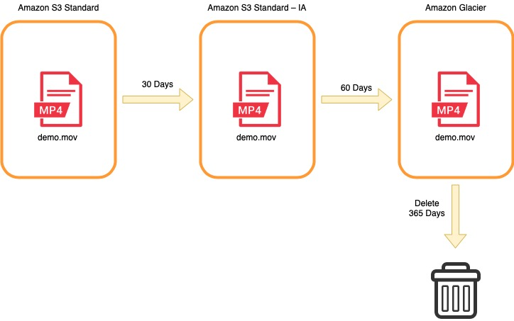
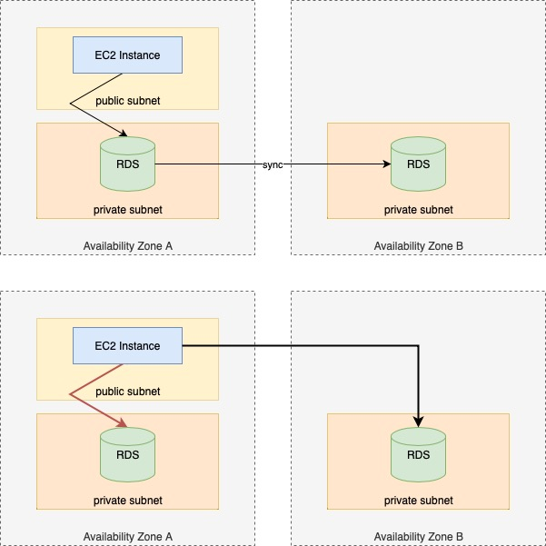

Computer Services Overview
- Amazon Elastic Compute Cloud (Amazon EC2)
- Virtual computing environment in the cloud
- You can select a variety of operating systems and resource configurations
- AWS Lambda – Serverless event driven computation
- Fully managed serverless compute
- Zero-administration compute platform
- Lets you run code without provisioning or managing servers
- Pay only for the compute time you consume
- Run code for virtually any type of application or backend service with zero administration
- Automatic Scaling – Scalability
- Scales EC2 capacity as needed
- Improves availability
- Allows organizations to scale Amazon EC2 capacity up or down according to conditions set
- Allows you to maintain application availability and endures that the desired number of Amazon EC2 instances are running
- Allows resources to scale in and out to match workload demand
- Elastic Load Balancer – Load distribution
- Distributes incoming traffic
- Helps achieve higher levels of fault tolerance
- Automatically adjusts to incoming traffic and rapid changes in network traffic by distributing across multiple Amazon EC2 instances in the cloud without manual intervention
- AWS Elastic Beanstalk – Automatic deployment
- Quickly deploys, scales, and manages web apps
- No charge for Elastic Beanstalk–pay only for the underlying AWS services used
- PaaS (Platform as a Service) that facilitates quick deployment of your applications by providing all the applications services you need for your application.
Additional Compute Services
- Amazon Lightsail
- Everything needed to jump start a project
- Manage simple web and application server
- Friendlier version of an EC2 instance where you can choose from a selection of pre-configured environment
- WordPress
- LAMP PHP 5
- LAMP PHP 7
- Node.js
- Nginx
- Offerings also include:
- Virtual-machine
- SSD-based storage
- Data transfer
- DNS management
- Static IP address
- Amazon Elastic Container Services (ECS) – Docker as a Service
- Highly scalable, high-performance container management service
- Eliminates need to manage cluster management infrastructure
- You no longer deal with infrastructure management when it comes to server consolidation
- Auto-Recovery – Failed containers will be relaunched automatically
- ECS offers support in its CLI for Docker Compose
- Manages containers and where they live. You build the cluster and are billed for EC2 resources used.
- AWS Fargate – Run containers without managing servers or clusters
- Containers without server or cluster management
- Fargate takes that effort away from you and streamlines deployments
- Same as ECS, but the cluster is "built" for you. You are billed for using it along with any AWS resources used (like ELBs). Much less flexibility, since it's not your cluster.
- Amazon Elastic Container Services for Kubernetes (EKS) – Deploy, manage, and scale containerized applications using Kubernetes on AWS
- Run kubernetes without managing Kubernetes clusters
- Uses Kubernetes for managing containers. Amazon creates the masters; you create the nodes. You're probably billed for EC2 resources used with a slight premium.
Compute refers to the amount of computational power required to fulfill your workload.
What Amazon EC2?
EC2 stands for Elastic Compute Cloud
- Elastic – You can decrease or increase the amount of instances/servers required (based on demand) by an application
- This can be done automatically ← Automatic Scaling
- Compute – Resources that are being presented
- Cloud – Cloud hosted compute resources
EC2 instances can be used for:
- Application server
- Web server
- Database server
- Game server
- Mail server
- Media server
- Catalog server
- File server
- Computing server
- Proxy server
Advantages of EC2
Amazon Elastic Compute Cloud offers virtual computing environments known as instances.
- Most server operating systems are supported:
- Windows 2003
- Windows 2008
- Windows 2012
- Red Hat
- Suse
- Ubuntu
- Amazon Linux
- Create, save, and reuse your own server images as Amazon Machine Images (AMI)
- Add more instances when you need them; terminate when you do not need
- Launch one instance at a time or lunch a whole fleet
- CPU, memory, storage, networking, graphics, and general purpose instance types are available
- Amazon EC2 instances in Amazon VPC now offer native support for IPv6 protocol
- Use security groups to control traffic to and from instances
Choosing the Right Amazon EC2 Instance
AWS has a wide variety of Amazon EC2 compute instances and choosing the right type matters.
- AWS uses Intel Xeon processors, providing customers with high performance and value
- Amazon EC2 instance types are optimized for different use cases and workload requirements – They come in multiple sizes
- Consider the following when choosing an instance:
- Core count
- Memory size
- Storage size & type
- Network performance
- CPU technologies
- There are two dimensions of new instances that are controlled by the instance type and Amazon Machine Image (AMI) for images launched on AWS. This include:
- Amount of virtual hardware dedicated to the instance
- Software loaded on the instance
- Each instance type or family is optimized for different workloads or use cases
- Within each type or family, there are multiple sizes:
When you choose your instance type, consider the several different attributes of each family; such as number of cores, amount of memory, amount and type of storage, network performance, and CPU technologies. Larger instances are better for workloads that scale.
Amazon EC2 provides the instance types listed in the following tables
| Instance Family |
Current Generation Instance Types |
| General purpose |
a1.medium a1.large a1.xlarge a1.2xlarge a1.4xlarge m4.large m4.xlarge m4.2xlarge m4.4xlarge m4.10xlarge m4.16xlarge m5.large m5.xlarge m5.2xlarge m5.4xlarge m5.12xlarge m5.24xlarge m5a.large m5a.xlarge m5a.2xlarge m5a.4xlarge m5a.12xlarge m5a.24xlarge m5d.large m5d.xlarge m5d.2xlarge m5d.4xlarge m5d.12xlarge m5d.24xlarge t2.nano t2.micro t2.small t2.medium t2.large t2.xlarge t2.2xlarge t3.nano t3.micro t3.small t3.medium t3.large t3.xlarge t3.2xlarge |
| Compute optimized |
c4.large c4.xlarge c4.2xlarge c4.4xlarge c4.8xlarge c5.large c5.xlarge c5.2xlarge c5.4xlarge c5.9xlarge c5.18xlarge c5d.xlarge c5d.2xlarge c5d.4xlarge c5d.9xlarge c5d.18xlarge c5n.large c5n.xlarge c5n.2xlarge c5n.4xlarge c5n.9xlarge c5n.18xlarge |
| Memory optimized |
r4.large r4.xlarge r4.2xlarge r4.4xlarge r4.8xlarge r4.16xlarge r5.large r5.xlarge r5.2xlarge r5.4xlarge r5.12xlarge r5.24xlarge r5a.large r5a.xlarge r5a.2xlarge r5a.4xlarge r5a.12xlarge r5a.24xlarge r5d.large r5d.xlarge r5d.2xlarge r5d.4xlarge r5d.12xlarge r5d.24xlarge x1.16xlarge x1.32xlarge x1e.xlarge x1e.2xlarge x1e.4xlarge x1e.8xlarge x1e.16xlarge x1e.32xlarge z1d.large z1d.xlarge z1d.2xlarge z1d.3xlarge z1d.6xlarge z1d.12xlarge |
| Storage optimized |
d2.xlarge d2.2xlarge d2.4xlarge d2.8xlarge h1.2xlarge h1.4xlarge h1.8xlarge h1.16xlarge i3.large i3.xlarge i3.2xlarge i3.4xlarge i3.8xlarge i3.16xlarge |
| Accelerated computing |
f1.2xlarge f1.4xlarge f1.16xlarge g3s.xlarge g3.4xlarge g3.8xlarge g3.16xlarge p2.xlarge p2.8xlarge p2.16xlarge p3.2xlarge p3.8xlarge p3.16xlarge p3dn.24xlarge |
| Bare metal |
i3.metal u-6tb1.metal u-9tb1.metal u-12tb1.metal |
Amazon Machine Image (AMI)
An AMI is a template that contains a software configuration that will be on an instance when it is launched.It defines the initial software that will be on an instance when it is launched serving as the basic unit of deployment for services delivered using Amazon EC2 and defines every aspect of the software state at instance launch including:
- The operating system (OS) and its configuration
- The initial state of any patches
- Application or system software
- All AMIs are based on X86 Oss, either Linux or Windows
You must specify a source AMI when you launch an Amazon EC2 instance.
- You can launch multiple instances from a single AMI when you need multiple instances with the same configuration
- You can use different AMIs to launch instances when you need instanced with different configurations
- An AMI includes a template for the root volume of the instance, launch permissions that control which AWS accounts can use that AMI to launch instances, and a block device mapping that specifies the volumes to attach to the instance when it’s launched.
AMI Lifecycle and Uses
After an AMI is created, it is registered. Once this is done, the AMI can be used to launch new instances. You can also use an AMI you do not own to launch instances if the AMI owner grants you launch permissions. You can copy an AMI within the same region or to different regions. When you no longer need an AMI, you can de-register it.
- Create and register an AMI
- Uses:
- Launch new instance
- Copy within the same region or to different regions
- De-register the AMI when no longer required

Broad Set of Compute Instance Types
Amazon EC2 provides a wide selection of instance types optimized to fit different use cases.
Instance types comprise varying combinations of CPU, memory, storage, and networking capacity and give you the flexibility to choose the appropriate mix of resources for your applications.
Each instance type includes one or more instances sizes, which allows you to scale your resources to the requirements of your target workload.
Amazon EC2 Pricing
There are four ways to pay for Amazon EC2 instances:
- On-Demand – Purchased at a fixed-rate per hour.
- Reserved Instances – Reservation of resources and capacity, for either one or three years, for a particular Availability Zone within a region
- AURI – All up front reserved instances
- PURI – Partial up front reserved instances
- NURI – Nothing up front reserved instance
- Spot Instances – Unused EC2 instance that is available for less than the On-Demand price.
- Because Spot Instances enable you to request unused EC2 instances at steep discounts, you can lower your Amazon EC2 costs significantly.
- Dedicated Hosts – Provide you with Amazon EC2 instance capacity on physical servers dedicated for your use.
Amazon EC2 usage of Linux- and Ubuntu-based instances that are launched in On-Demand, Spot, and Reserved are billed on one-second increments, with a minimum of 60 seconds. All other types of OSs are billed by the hour. The minimum unit of time that will be charged is a minutem but after your first minute of time, we can account for seconds. However, if you start then stop an instance in 10 seconds, you will be charged the 60 seconds not 10.

Per Second Billing
With per-second billing, you pay only what you use. It takes cost of unused minutes and seconds in an hour off of the bill, so you can focus on improving your applications instead of maximizing usage to the hour. This is of particular value if you manage instances running for irregular periods of time, such as dev/testing, data processing, analytics, batch processing and gaming applications.
- Pay only for what you use is available for instances launched in:
- On-Demand, Reserved, and Spot instances
- Instances running for irregular periods of time
- Amazon Linux and Ubuntu
- All AWS Regions and Availability Zone
| On-Demand Instances |
Spot Instances |
Reserved Instances |
Dedicated Hosts |
| Pay for what you use |
Spot price based on supply and demand |
Pay low or no upfront fee; overall cost is lower |
Pay the On-Demand rate for every hour the host is active in the account |
| Per-second billing |
Per-second billing |
Per-second billing |
|
| Low cost and flexibility |
Large scale, dynamic workload |
Predictability ensure compute capacity is available when needed |
Save money on licensing costs and help meet compliance and regulatory requirements |
| Short-term, spiky, or unpredictable workloads |
Applications with flexible start and end times |
Steady state or predictable usage workloads |
Bring your own license (BYOL) |
| Application development or testing |
Applications only feasible at very low compute prices |
Applications that require reserved capacity, including disaster recovery |
Compliance and regulatory restrictions |
|
Users with urgent computing needs for large amounts of additional capacity |
Users able to make upfront payments to reduce total computing costs even further |
Usage and licensing tracking |
|
|
|
Control instance placement |
Billing and Instance Configuration
When you begin to estimate the cost of using Amazon EC2, you need to consider nine factors:- Clock Hours of Server Time for Second/Hourly Billing:
- Resources incur charges only when running
- Instance Configuration:
- Physical capacity of the instance
- Pricing varies with:
- AWS region
- Operating system
- Number of cores
- Memory
- Eays to purchase Amazon EC2 Instances:
- On-Demand Instances
- Compute capacity by the hour & second
- Minimum of 60 seconds
- Per second billing only available for Linux- and Ubuntu-based instances.
- Reserved Instances
- Full, Partial, or no-up front payment for instances reserved
- AURI
- PURI
- NURI
- Discount on hourly charge for that instance
- 1 or 3 year term
- Spot Instances
- Bid for unsused Amazon EC2 capacity
- Price based on supply and demand
- Instances can be lost if you are outbid
- Instances can be interrupted if Spot price exceeds minimum
- Dedicated Hosts
- Can be purchased On-Demand (Hourly)
- Can be purchased as a Reservation
- Number of Instances
- Provision multiple instances to handle peak loads and shut them down when they are no longer needed.
- Pay for only the capacity you actually used.
- Load Balancing
- Uses Elastic Load Balancing to distribute traffic among Amazon EC2 instances
- Calculates monthly costs based on:
- Hours load balancer runs
- Data load balancer processes
- Use Amazon CloudWatch to Monitor Instances
- Basic monitoring (By default, basic monitoring is enabled at no additional cost)
- Detail monitoring
- Fixed monthly rate for seven preselected metrics recorded once a minute
- Prorated partial months
- Partial months are charged on an hourly rata basis, at a per instance-hour rate
- Auto Scaling
- Automatically adjusts number of Amazon EC2 instances in your deployment according to conditions you define
- Incurs no additional charge beyong CloudWatch fees
- Elastic IP Addresses
- No charge for one elastic IP address associated with a running instance
- Pricing for operating systems and software packages
- Includes OS prices in instances
- perating System prices are included in the instance prices.
- Partner with other vendors for certain software
- AWS has made it easy for you and has partnered with Microsoft, IBM, and several other vendors to simplify running certain commercial software packages running on your Amazon EC2 instances
- Requires licenses from vendors for other software
- Bring your existing license through specific vendor programs
Spot Instance Hibernation
Amazon EC2 Spot can now hibernate Amazon EBS-backed instances in the event of an interruption. Spot can fulfill your request by resuming instances from a hibernated state when capacity is available. Hibernating is just like closing and opening your laptop lid, with your application starting right where you left off.
- Resume instances when capacity is available
- The Spot service resumes the instance when capacity becomes available with a Spot price that is less than your specified maximum price.
- Use an encrypted EBS volume as the root volume
- Instance memory is stored on the root volume during hibernation.
- This ensures that the contents of memory (RAM) are encrypted when the data is at rest on the volume and when data is moving between the instance and volume.
- If your AMI does not have an encrypted root volume, you can copy it to a new AMI and request encryption.
- Hibernation agent required
Lowering TCO Through Cost Optimization
Lift and shift is a strategy for moving an application or operation from one environment to another – without redesigning the application.
The initial lift and shift model does not fully capture the on-going economic case for the cloud. Cost optimization over time continues to drive down costs through ongoing improvements, managed services, and an expanded scope of analysis beyond just Amazon EC2 (for example, Amazon Relational Database Service (Amazon RDS), Lambda, and storage).

Four Pillars of Cost Optimization
To optimize costs, you need to consider four consistent, powerful drivers:
- Righ-sizing: Choose the right balance of instance type
- Select appropriate instance types
- Select the cheapest instance available that still meets your performance requirements.
- Right-size is defined as the cheapest instance or storage type available that meets performance requirements
- Downsize instances
- Review CPU, RAM, storage, and network utilization to identify potential instances that can be downsized.
- Also, testing is cheap so you can easily provision any type and size of instance to test your application on to identify performance requirements.
- Use this to yours advantage for right-sizing.
- Leverage Amazon CloudWatch metrics
- Leverage Amazon CloudWatch metrics and set up custom metrics.
- A metrics represents time-ordered set of values that are published to CloudWatch.
- Right size, then reserve
- Reserved Instances: Leverage reserved instances when you have long-term workloads with predictable usage patterns.
- Elasticity: Increase elasticity with auto-scaling
- Monitor and Improve: Monitor by measuring and analyzing your system. Continually improve and adjust as you go.
Instance Types
- On-Demand
- Pay by the hour
- No long-term commitments
- Pay for compute capacity by per hour or per second depending on which instances you run
- No long-term commitments or upfront payments are needed
- You can increase or decrease your compute capacity depending on the demands of your application and only pay the specified per hourly rates for the instance you use
- Pricing works well for spiky worloads
- No long-term commitments
- Reserved
- Pay upfront
- 50% to 75% lower hourly rate
- Give you the option to make one upfront payment foe each instance you want to reserced at a significance discount
- There are two types of reserved classes:
- Standad
- With standard, some attributes, such as instance size, can be modified during the term; however, the instance type cannot be modified.
- You cannot exchange a Standard or Convertible offering class
- CAN ONLY CHANGE SIZE
- CANNOT CHANGE INSTANCE TYPE
- Convertible
- With convertible, the instance can be exchanged during the term for another Convertible Reserved Instance with new attributes including instance family, instance type, platform, scope, or tenancy.
- Reserved pricing works well for steady-state workloads with commitment utilization
- Spot
- Enable you to bid for unused Amazon EC2 capacity
- Instances are charged the Spot Price, which is set by Amazon and flunctuates depending on the supply and demand for Spot Instance capacity
- Amazon EC2 spot instances allow you to request spare Amazon EC2 computing capacity for up to 90% off the On-Demand price
- Spot pricing offers the best hourly rate and works best for workloads that are not time-dependent and which can afford to be interrupted
- Dedicated
- Run on hardware dedicated to a single customer
- Dedicated instances ensure that your Amazon EC2 compute instances are isolated at the hardware level
- Some customers use Dedicated Instances to allow them to run third-party software, where the licensing model demands that the hardware is dedicated to one tenant
Reserved Instance Capacity
After you have settled on an instance type, you have the option of purchasing a Reserved Instance (RI).
- This is an upfrony commitment to purchase capacity in a particular AWS region
- A Reserved Instance is a billing construct, it ensures you have the capacity available in the Availability Zones you have selected and purchased for that instance type
- Reserved instances are currently offered as one- or three- year commitments, and your requirements may change before the Reserved Instance commitment expires
- It is possible to combine a Reserved Instance if your workload is time-dependent
Reserved Instances (RIs)/Capacity
- Amazon Elastic Compute Cloud (EC2)
- Amazon Relational Database Service (RDS)
- Amazon DynamoDB
- Amazon Redshift
- Amazon ElastiCache
Commitment Levels
It’s important to continually reevaluate your instance selection, because workloads and instance types will change over time.
Reserved Instance Coverage – Cover always-on resources with standard or convertible Reserved Instances.
Your target should be 70 to 80 percent of always-on coverage.
Increase Reserved Instance Utilization:
- Known architectures: Leverage Standard Reserved Instance flexibility to increase utilization
- Growing or chaing architectures: Leverage Convertible Reserved Instances across families, sizes, and OS.
- Regional Benefit: Consolidated billing, reservation not critical.
Reserved Instance Utilization:
- Leverage RI flexibility to increase utilization
- Merge and split RIs as needed
- Target 95% RI utilization
Increase Elasticity
Elasticity is using an instance when you need it, but turning it off when you don’t. It’s one of the most central tenets of the cloud, but we don’t often see customers go through a learning process to operationalize this in order to drive cost savings.Elasticity – Using an instance when you need, turning it off when you don’t
Turn off non-production instances
Example: Dev/ Test
Auto scale production – Use Auto Scaling to scale up and down based on demand and usage
Example: Demand spikes
Target: 20-30% of Amazon EC2 instances
Run in On-demand or as Spot
Measure, Monitor, and Improve
Cost Optimization Opportunities include:
- Auto-tag resources
- Helps provide information about what resources are being used by whom and for what purpose
- Tags are key value pairs attached to AWS resources
- Tags can be inherited to help you keep track of who provisioned resources
- Identify always-on non production systems
- Set up automated reports that identify instances not being turned off or that run at the wrong size
- Identify instance to downsize
- Set up a report to determine what instance to downsize
- Recommend Reserved Instance (RIs) to purchase
- Tools that recommend which Reserved Instances (RIs) to buy
- Dashboard your status
- Consolidate your billings
- One Bill – You get one bill for multiple accounts
- Easy Tracking – You can easily track each account’s charges and download the cost data in CSV format
- Combined Usage – If you have multiple accounts today, your charges might decrease because AWS combines resources from all accounts in the organization to qualify you for volume pricing discounts
- Report on savings
- Report on cost optimization in order to show the opportunities that exist and show how you are progressing
- Create a dahsboard that can report on the savings your cost optimization efforts have achieved
AWS Trusted Advisor- Optimize your AWS environment
- Reduce cost, increase performance, and improve security
Cost Explorer
- View graphs of your costs: the last 13 months
- Forecast your likely costs: the next 3 months
- View time data by day or month
- Specify the time ranges for the data you want to see
Continual Process of Cost Optimization- Select the appropriate pricing models (instance types) and leverage Reserved Instances (RIs) according to your business requirements
- Increase your elasticity by using auto scaling and turning off non-production instances
- Leverage AWS tools to analyze, monitor, and improve your costs
Introduction to AWS Lambda
AWS Lambda is an event driven serverless compute service. Lambda lets you run code without provisioning or managing servers. You pay only for the compute time you consume (There is no charge when your code is not running).What is AWS Lambda?Lambda offers fully managed, serverless compute services that executes your code only when needed and scales automatically to thousands of requests per second.
- Fully managed serverless compute
- Event-driven execution
- Sub-second metering
- Function execution limited to a maximum of 5 minutes
- Multiple languages supported
Lambda allows you to run code for virtually any type of application or backend service (zero administration required)
Lambda Key Functions- No servers to manage
- There are no servers to manage
- You only pay for the compute you use with continuous scaling
- Sub-second metering makes it so you dont pay for compute time when your code is not running
- This make AWS lambda ideal for variable in intermittent workloads
- Continuous scaling
- You can run code for virtually any application or backend service, all with zero administration, including server and operating system maintenance
- Just upload your code and Lambda takes care of everything required to run and scale your code with high availability
- Sub-second metering
- You can set up your code automatically trigger from other AWS services, or call it directly from any web or mobile app
Lambda Workflow- Upload your code to AWS Lambda
- Set up your code to trigger from other AWS services, HTTP endpoints, or in-app activity
- Lambda runs your code only when triggered using only the compute resources needed
- Pay just for the compute time you use (1/100 millisecond of execution)
Lambda use cases:Run your code in reponse to an event
- Changes to an S3 bucket
- Changes to an Amazon Dynamo DB table
- Respond to HTTP request
- Invoke code with API calls
Other Lambda use cases include:
- Automated backups
- Processing objects uploaded to Amazon S3
- Event-driven log analysis
- Event-driven transformations
- Internet of Things (IoT)
- Operating serverless websites
Introduction to AWS Elastic Beanstalk
Elastic Beanstalk is another compute service, it is an easy-to-use service for deploying and scaling web applications and services developed with Java, .NET, Node.js, Python, Ruby, Go, and Docker on familiar servers such as Apache, Nginx, Passenger, and IIS.
You can simply upload your code and Elastic Beanstalk automatically handles the deployment, from capacity provisioning and load balancing to automatic scaling and application health monitoring. At the same time, you retain full control over the AWS resources powering your application and can access the underlying resources at any time.
What is Elastic Beanstalk?
- Platform-as-a-Service (PaaS)
- Quickly deploys, scales, and managed web apps (Simply provide your code)
- Reduces management complexity
- Keeps controls in your hands:
- Choose your instance type
- Choose your database
- Set and adjust Auto Scaling
- Update your application
- Access server log files
- Enable HTTPS on load balancer
- Supports a large range of platforms:
- Packer Builder
- Single Container, Multi-Container, or Pre-configured Docker
- Go
- Java SE
- Java with Tomcat
- .NET on Windows Server with IIS
- Node.js
- PHP
- Python
- Ruby
- No charge for Elastic Beanstalk; pay only for the underlying services used
Elastic Beanstalk Components
- Elastic Beanstalk provides all the applications services that you need for your application. The only thing you need to create your code, deploy it according to your needs.
- Your code
- Application service
- HTTP service
- Operation system
- Language interpreter
- Host
Elastic Beanstalk Key Benefits
Elastic Beanstalk is the fastest and simplest way to deploy your application on AWS.
- Fast and simple to begin
- Developer productivity
- Code your app instead of managing servers
- Impossible to outgrow
- Complete resource control
- You have complete freedom to select AWS resources of your choice such as the instance type
Elastic Beanstalk automatically handles the deployment details of capacity provisioning, load balancing, automatic scaling, and application health monitoring.
Introduction to Storage Services
There are three broad categories of storage:- Instance store/ Ephemeral storage
- Temporary storage that is added to your Amazon EC2 instance
- Amazon EBS
- Persistent and mountable storage that can be mounted as a device to an Amazon EC2 instance
- Amazon EBS can only be mounted to an Amazon EC2 instance within the ssame Availability Zone
- Amazon S3
- Similar to Amazon EBS, Amazon S3 is persistent storage; however, it can be accessed from anywhere
Elastic Block Store
Amazon Elastic Block Store (Amazon EBS) is an AWS block storage system that is best used for storing persistent data. Amazon EBS provides highly available block level storage volumes for use with Amazon EC2 instances.
- Persistent storage is any data storage device that retains data after power to that device is shut off. It is also sometimes referred to as non-volatile storage.
- Each Amazon EBS volume is automatically replicated within it’s Availability Zone to protect you from component failure, offering high availability and durability.
- Amazon EBS volumes offer the consistent and low-latency performance needed to run your workloads.
Block vs. Object Storage
With block storage, you only need to change the block that contains the piece of data that you need to change; however, with object storage, the entire file must be updated.
One of the critical concepts to understanding the differences between some storage types is whether they offer “block-level” storage or “object-level” storage.
This difference has a major impact on the throughput, latency, and cost of your storage solution. Block storage solutions are typically faster and use less bandwidth, bust cost more than object-level storage.
Amazon EBSAmazon EBS allows you to create individual storage volumes and attach them to an Amazon EC2 instance:
- Amazon EBS offers block-level storage
- Volumes are automatically replicated within its own Availability Zone
- Can be backed up automatically to Amazon S3
- Uses:
- Boot volumes and storage for Amazon EC2 instances
- Data storage with a file system
- Database hosts
- Enterprise applications
- Can also be used to back up your instances into Amazon Machine Images (AMIs) which are stored in Amazon S3 and be resused to create new Amazon EC2 instances later
Amazon EBS Volume Types- IOPS SSD-backed Amazon EBS volumes can give you the highest performance ← EXPENSIVE
- Hard disk drives are better suited for applications that don’t require high perofrmance ← CHEAP

Snapshots:- Point-in-time snapshots
- Recreate a new volume at any time
Encryption:
- Encrypted Amazon EBS volumes
- No additional cost
Elasticity:
- Increase capacity
- Change to different types
Amazon EBS: Volumes and IOPS
When you beging to estimate the cost for Amazon EBS, you need to consider the following:
- Volumes
- Volume storage for all Amazon EBS volume types is charged by the amount you provision in GB per month, until you release the storage.
- Amazon EBS volumes persist indenpendently from the instance
- All volume types are charged by the amount provisioned per month
- Input Output Operations per Seconds (IOPS)
- General Purpose (SSD)
- Charged by the amount you provision in GB per month until storage is released
- Magnetic
- Charged by the number of requests to volume
- Provisioned IOPS (SSD)
- Charged by the amount you provision in IOPS (By % of day/ month used)
- Input/Output (I/O) is included in the price of General Purpose (SSD) volumes, while for Amazon EBS Magnetic volumes, I/O is charged by the number of requests you make to your volume. With provisioned IOPS (SSD) volumes, you are also charged by the amount you provision in IOPS (multiplied by the percentage of days you provision for the month)
- Snapshots
- Added cost of Amazon EBS snapshots to Amazon S3 is per GB-month of data stored
- Data Transfer
- Inbound data transfer is free
- Outbound data transfer charges are tiered
Amazon EBS Features- Persistent and customizable block storage for Amazon EC2
- HHD and SSD types
- Replicated in the same Availability Zone
- Easy and transparent encryption
- Elastic volumes
- Back up using snapshots
- Amazon EBS provides three volume types:
- General Purpose (SSD)
- Provisioned IOPS (SSD)
- Magnetic
Amazon Simple Storage Service (S3)
Amazon S3 is object storage built to store and retrieve any amount of data from anywhere - web sites and mobile apps, corporate applications, and data fromt internet of things sensors or devices.
Amazon S3 is object-level storage, which means that if you want to change a part of the file, you have to make the change and then re-upload the entire modified file. Amazon S3 stores data as objects within resources called buckets.
Managed cloud storage solution is designed to scale seamlessly and provide 99.99999999% durability.
- Store as many objects as you want
- Bucket names must be unique across all existing bucket names in Amazon S3
- Amazon S3 cannot be used as a bootable drive
- Data is stored redundantly
- Acess Amazon S3 with the AWS Management Console, one of the Software Development Kits (SDKs), or a third-party solutions.
- Object uploads or deletes can trigger notifications, workflows, or even scripts.
- Data in transit and at rest can be encrypted automatically
- Store class analysis (Amazon S3 Analytics) to analyze storage access patterns and transition the right data to the right storage class.
- Objects can be up to 5 terrabytes in size
Amazon S3 Storage Classes
You can select from four different storage classes to store your data in Amazon S3
- Amazon S3 Standard
- Amazon S3 standard offers high durability, availability, and performance object storage for frequently accessed data. Because it delivers low latency and high throughput, Amazon S3 Standard is perfect for a wide variety of use cases inclusing cloud applications, dynamic websites, content distributions, mobile and gaming applications, and Big Data analytics.
- Amazon S3 Standard-Infrequent Access (AC)
- Amazon S3 storage class for data that is accessed less frequently, but requires rapid access when needed. Amazon S3 Standard -IA offers the high durability, high throughput, and low latency of Amazon S3 Standard, with a low per GB storage price and per GB retrieval fee. This conbination of low cost and high performance make Amazon S2 Standard -IA ideal for long term storage, backups, and as a data store for disaster recovery.
- Amazon S3 One Zone-Infrequent Access (IA)
- Amazon S3 storage class for data that is accessed less frequently, but rquires rapid access when needed. UNlike other Amazon storage classes, which store data in a minimum of three Availability Zones (AZs), Amazon S3 One Zone -IA stores data in a single Availability Zone.
- Amazon Glacier
- Secure, durable, and extremely low-cost storage device service for data archiving. You can reliably store any amount of data at costs that are competitive with or cheaper than on-premises solutions.
Data Redundancy Stored in Regions – When you create a bucket in Amazon S3, it’s associated with a particular AWS Region. Whenever you store data in the bucket, it is redundantly stored across multiple AWS facilities within your selected region.
Amazon S3 is designed to durably store your data, even in the case of concurrent data loss in two AWS facilities
Amazon S3 will automatically manage the storage behind your bucket even as your data grows. This allows you to get started immediately and to have your data storage grow with your application needs.
Amazon S3 will also scale to handle a high volume of requests. You dont have to provision the storage or throughput, and you will only be billed what you use.
Access the Data AnywhereYou can access Amazon S3 via:
- AWS Console
- AWS CLI
- AWS SDK
- REST Endpoints
These support HTTP or HTTPS access. To support this type URL-based access, S3 bucket names must be globally unique and DNS-compliant.
Common Uses of Amazon S3- Storing application assets
- Static web hosting
- Backup and Disaster Recovery (DR)
- Staging area for big data
Amazon S3 PricingSpecific costs may vary depending on region and the specific requests made. You pay only for what you use, including gigabytes per month, transfer out of other regions, PUT, COPY, POST, LIST, and GET requests.
As a general rule, you only pay for transfers that cross the boundary of your region, which means you do not pay for transfers in to Amazon S3 and transfers out from Amazon S3 to Amazon CloudFront’s edge locations within that same region.
Pay only what you use, including:
- GBs per month
- Transfer OUT to other regions
- PUT, COPY, POST, LIST, and GET requests
You do NOT have to pay for:
- Transfers IN to Amazon S3
- Transfers OUT from Amazon S3 to Amazon CloudFront or Amazon EC2 in the same region
Amazon S3: Storage Pricing
When you begin to estimate the costs of Amazon S3, you need to consider the following:
- Storage Class:
- Standard Storage – Designed to provide 99.9999% durability and 99.99% availability
- 99.999999999% durability
- 99.99% availability
- Standard – Infrequent Access (IA) – Storage option within Amazon S3 that you can use to reduce you costs by storing less frequently accessed data at slighlty lower levels of redundancy than Amazon S3’s standard storage.
- 99.999999999% durability
- 99.99% availability
- Storage: The number and size of objects stored in your Amazon S3 buckets as wel as the type of storage should also be considered.
- The number and size of the objects
- Type of storage
- Requests: Consider the number and type of requests. GET requests incur charges at different rates than other requests, such as PUT and COPY requests.
- GET – Retrieves an object from Amazon S3. You must have READ access to use this operation.
- PUT – Adds an object to a bucket. You must have WRITE permissions on a bucket to add an object to it.
- COPY – Creates a copy of an object that is already stored in Amazon S3. A PUT copy operation is the same as performing a GET and then a PUT.
- Data Transfers: Consider the amount of data transferred out of the Amazon S3 region. Remember that data transfer is in free, but there is a charge for data transfer out.
Amazon Elastic FIle System (Amazon EFS)
Amazon Elastic File System (Amazon EFS) provides simple, scalable, elastic file storage for use with AWS services and on-premise resources. It is easy to use and offers a simple interface that allows you to create and configure file systems quickly and easily.
Amazon EFS is built to elastically scale on demand without disrupting applications, growing and shrinking automatically as you add and remove files, so your applications have the storage they need, when they need it.
Amazon EFS Features
Amazon EFS is a fully managed service that makes it easy to setup and scale file storage in the AWS cloud.
- File storage in the AWS cloud
- Perfect for big data and analytics, media processing workflows, content management, web serving and home directories.
- Petabyte-scale, low latency file system
- Shared storage
- Elastic capacity
- Supports the Network File System versions 4.0 and 4.1 (NFSv4) protocol
- Compatible with all Linux-based AMIs for Amazon EC2
Amazon EFS provides file storage in the cloud. With Amazon EFS, you can create a file system, mount the file system on an Amazon EC2 instance, then read and write data from to and from you file system. You can mount an Amazon EFS file system in your VPC, through Network File System versions 4.0 and 4.1 (NFSv4) protocol.
You can access your Amazon EFS file system concurrently from Amazon EC2 instances in your Amazon VPC, so applications that scale beyonf a single connection can access a file system. Amazon EC2 instance runnin in multiple Availability Zones within the same AWS Region can access the file system, so that many users can access and share common data source.

Amazon EFS Resources
In Amazon EFS, a file system is the primary resource. Each file system has properties such as ID, creation token, creation time, file system size in bytes, number of mount targets created for the file system, and the file system state.
Amazon EFS also supports other resources to configure the primary resources. These include mount targets and tags.
- File System
- Mount Target – To access your file system, you must create mount targets in your VPC. Each mount target has the following properties.
- The mount target ID
- The subnet ID in which it is created
- The file system ID for which it is created
- An IP address at which the file system may be mounted
- The mount target state
- Tags – Help organize your file systems, you can assign your own metadata to each of the file systems you create.
- Each tag is a key-value pair
Summary of Amazon EFS
- Amazon EFS provides file storage over a network
- Perfect for bibg data and analytics, media processing workflows, content management, web serving and home directories
- Fully managed service that eliminates storage administration tasks
- Accessible from the console, API, and the CLI
- Scales up or down as files are added or removed and you pay for what you use
Amazon Glacier
Amazon Glacier is a secure, durable, and extremely low-cost cloud storage service for data archiving and long-term backup.
Amazon Glacier is a data archiving service designed for security, durability, and an extremely low cost.
- Designed for durability of 99.999999999% of objects
- Support SSL/TLS encryption of data in transit and at rest
- The Vault Lock feature enforces compliance via a lockable policy
There are three key Amazon Glacier terms that your should be familiar with:- Archive – Any object such as photo, video file, or document that you store in Amazon Glacier. It is the base unit of storage in Amazon Glacier. Each archive has its own and unique ID and can also have a description.
- Vault – A container for storing archives. When you create a vault, you specify the vault name and the region in which you would like the vault located.
- Vault Access Policy – Determine who can and cannot access the data stored in the vault as well as what operations users can and cannot perform. One vault access permissions policy can be created for each vault to manage access permissions for that vault. You can also use a vault lock policy to make sure a vault cannot be altered. Each vault can have one vault policy and one vault lock policy attached to it.
- There are three options to retrieving data with varying access times and costs:
- Expedited – Retrievals are typically made available within 1-5 minutes (Highest cost)
- Standard – Retrievals typically complete within 3-5 hours (Not as expensive as expedited but not as cheap as bulk)
- Bulk – Retrievals typically complete within 5-12 hours (Cheapest)
Lifecycle Policies
Amazon S3 lifecycle policies allow you to delete or move objects based on age.

|
Amazon S3 |
Amazon Glacier |
| Data Volume |
No limit |
No limit |
| Average Latency |
ms |
min/hrs |
| Item Size |
5 TB max |
40 TB max |
| Cost/GB Per Month |
¢¢ |
¢ |
| Billed Requests |
PUT,COPY,POST,LIST, GET |
UPLOAD and RETRIEVAL |
| Retrieval Pricing |
¢ Per request |
¢¢ Per request and per GB |
Server-Side Encryption
Another important difference between Amazon S3 and Amazon Glacier is how data is encrypted. Server-side encryption is about proctecting data at rest. With both solutions, you can securely transfer your data over HTTPS. Any data archived in Amazon Glacier is encrypted by default. With Amazon S3, your application must initiate server-side encryption. There are several ways to accomplish this.
Server-side encryption with Amazon S3-managed encryption keys (SSE-S3) employs strong multi-factor encryption. Amazon S3 encrypts each object with a unique key. As an additional safeguard, it encrypts the key itself with a master key that it regularly rotates. Amazon S3 server-side encryption uses one of the strongest block ciphers available, 256-bit Advantage Encryption Standards (AES-256) to encrypt your data.
AWS Key Management Service (AWS KMS) is a service that combines secure, highly available hardware and software to provide a key management system scaled for cloud. AWS KMS uses Customer Master Keys (CMKs) to encrypt your Amazon S3 ibjects. You use AWS KMS via the Encryption Keys section in the IAM console or via AWS KMS APIs to centrally create encryption keys, define the policies that control how keys can be used, and audit key usage to prove they are being used correctly. You can use these keys to protect your data in Amazon S3 buckets.
Using server-side encryption with Customer-provided Encryption Keys (SS-EC) allows you
to set your own encryption keys. With the encryption key you provide as part of your
request, Amazon S3 manages both encryption, as it writes to disks, and decryption when
you access your objects.
Security with Amazon Glacier
By default, only you can access your data. You can enable and control access to your data in Amazon Glacier by using AWS IAM. You just set up an AWS IAM policy that specifies user access.
- Control access with AWS IAM
- Amazon Glacier encrypts your data with AES-256
- Amazon Glacier manages your keys for you
Amazon Glacier Summary- Amazon Glacier is a data archiving service designed for security, durability, and an extremely low cost.
- Amazon Glacier pricing is region-based
- Extremely low-cost design is ideal for long-term archiving
- The service is designed for durability of 99.999999999% of object
Amazon Virtual Private Cloud
The Amazon Virtual Private Cloud (or Amazon VPC) is a custom-defined network within the AWS cloud. It enables you to design an implement an independent network that operates in the cloud.
The AWS cloud offers pay-as-you-go, on-demand compute as well as managed services, all accessible via the web. These compute resources and services must be accessible via normal IP protocols implemeted with familiar network structures.
Amazon VPC
Amazon Virtual Private Cloud (Amazon VPC) allows you to provision virtual networks hosted on the AWS cloud and dedicated to your AWS account.
- A private, virtual netowkr in the AWS Cloud, Amazon VPCs are logically isolated from other virtual networks.
- Many AWS resources, such as Amazon Elastic Compute Cloud (Amazon EC2) instances, are launched into VPCs.
- Allow complete control of network configuration, including:
- Internet Protocol (IP) address ranges
- Subnet creation
- Route table creation
- Network gateways
- Security settings
Amazon VPC Deployment
You can deploy your Amazon VPC in a way to layer security controls in the network. This includes isolating subnetsm defining access control lists, and customizing routing rules. You have complete control to allow and deny both incoming and outgoing traffic.
Offers several layers of security controls – Ability to allows and deny specific internet and internal traffic.
Other AWS services deploy into Amazon VPC – Service inherits security build into network.
Amazon VPC Integration:
- Amazon EC2
- Amazon EMR
- Amazon RDS
- Amazon WorkSpaces
- Elastic Load Balancer
- AWS OpsWorks
- Amazon EFS
- AWS Elastic Beanstalk
- Amazon Route 53
- AWS Data Pipeline
- Amazon S3
- Amazon DynamoDB
- Amazon ElastiCache
- AWS Directory Service
- etc...
Amazon VPC FeaturesAmazon VPC buils upon the AWS global infrastructure of Regions and Availability Zones (AZ), and allows you to easily take advantage of the high availability provided by the AWS cloud. Amazon VPCs live within regions, as they can exist only in a single region. There are ways to connect Amazon VPCs in different regions to each other without going through the public internet. Each AWS account can create multiple Amazon VPCs that can be used to segregate environments.
- Builds upon high availability of AWS Regions and Availability Zones (AZ)
- Each Amazon VPC lives in a single region
- Multiple Amazon VPCs per account
- Subnets:
- Used to divide Amazon VPC
- Allow Amazon VPC to span multiple Availability Zones
- Subnets are generally classificed as public or private, with public having direct access to the Internet and private not having direct access to the Internet.
- For a subnet to be public, you need to attach an Internet gateway to the Amazon VPC and update the route table of the public subnet to send non-local traffic to the internet of gateway. Amazon EC2 instances also need a public IP address to route to an internet gateway.
You can create many subnets in your VPC, thgouh fewer ios recommended to limit the complexity of the network topology.
You can also configure route tables for your subnets to control the traffic between subnets and the internet.
Amazon VPC Address
When you create an Amazon VPC, you must specificy the IPv4 address range by choosing a
Classless Inter-Domain Router (CIDR) block, such as 10.0.0.0/16.
Each Amazon VPC must specify the IPv4 address range by choosing a Classless Inter-Domain Routing (CIDR) block like 10.0.0.0/16:
- Address range cannot be changed after the Amazon VPC is created
- Address range can be large as /16
- 65,536 available addresses
- Address range can be small as /28
- Addresses should not overlap addresses of connected networks
Amazon VPC Components
You can use the following components to configure networking in your Amazon VPC
- Subnets – Segments of an Amazon VPC’s IP address range where you can launch AWS services
- Subnets within a zone cannot span zones
- One subnet equal one availability zone
- Can be classified as public, private, or VPN only
- Default Amazon VPCs contain one public subnet in every Availability Zone within the region with a netmask of /20ss
- CIDR blocks define subnets
- AWS reserves the first four IP addresses and the last IP address of every subnet for internal networking purposes.
- A public subnet is one in which an associated route table direct the subnet’s traffic to the Amazon VPC’s internet gateway.
- Route Tables – Used to control traffic going out of the subnets
- Contains a set of rules, called routes, that are used to determine where network traffic is directed.
- Each subnet in your Amazon VPC must be associated with a route table
- The table controls the routing for the subnet
- A subnet can only be associated with one route table at a time, but you can associate multiple subnets with the same route table
- Dynamic Host Configuration Protocol (DHCP) Option Set – Provides a standard for passing configuration information to hosts on a TCP/IP network
- AWS automatically create and associates a Dynamic Host Configuration Protocol (DHCP_ option set for your Amazon VPC upon creation and sets two options:
- Domain-name-servers
- Domain-name
- Security Groups – Virtual, stateful firewall
- Network Access Control Lists (ACLs) – Control access to subnets, and stateless.
- Optional layer of security for you Amazon VPC that acts as a firewall for controlling traffic in and out of one or more subnets
Optional Amazon VPC Components
- Internet Gateway (IGW) – Allows access to the Internet from Amazon VPC
- Horizontally scaled, redundant, and highly available Amazon VPC component that allows communication between instances in your Amazon VPC and the Internet.
- Elastic IP (EIP) Addresses – Static, public IP addresses that can be pulled from a pool for use on a temporary basis
- Static IPv4 address designed for dyamic cloud computing.
- An Elastic IP address is associated with your AWS account
- Elastic Network Interface (ENI) – Virtual network interface
- Virtual network interface that you can attach to an instance in an Amazon VPC
- Endpoints – Direct connection to another AWS service
- Enables you to create a private connection between your Amazon VPC and another AWS service without requiring access over the Internet or through a NAT instance, VPN connection, or AWS Direct Connect
- Peering – Allows two Amazon VPCs to communicate
- Networking connection between two Amazon VPCs that enables instances in either Amazon VPC to communicate with each other as if they are within the same network.
- NAT Address Translation (NATs) instances and NAT Gateways – Accepts, translates, and forwards traffic within a private subnet.
- AMazon Linux AMI designed to keep traffic from instances within a private subnet.
- A NAT Gateway is an Amazon managed resources designed to operate just like a NAT instance, but is simpler to manage and highly available within an AZ
Amazon VPC Connnections
There are several VPN connectivity options for Amazon VPC. You can connect your Amazon VPC to remote networks using:
- AWS Hardware VPN
- You can create an IPsec hardware VPN connection between your Amazon VPC and your remote network
- AWS Direct Connect
- AWS Direct Connect provides a dedicated private connection from a remote network to your Amazon VPC
- AWS VPN CloudHub
- You can create multiple AWS hardware VPN connections via your VPC to enable communications between various remote networks
- Software VPN
- You can create a VPN connection to your remote network by using an Amazon EC2 instance in your Amazon VPC that’s running a software VPN appliance
Amazon VPC Review- Amazon VPC allows you to include resources in more than one availability zone
- Have multiple Amazon VPCs in each account or region and VPCs in as many regions as you’d like or in multiple accounts
- You can connect your Amazon VPC to remote networks using a VPN connection
VPC Security Groups
- Security groups act like a built-in firewall for your virtual servers
- Security group rules determine who has access to instances
- Security groups are stateful
- Stateful – Stateful means the computer keeps tracks of the state of interaction, usually by setting values in a storage field designed for that purpose
- Stateless – No information is retained by either sender or received, and each interaction request has to be handled based entirely on information that comes with it
Network Access Control Lists – Firewall for associated subnets
• Acts as a firewall for associated subnets, controlling both inbound and outbound traffic at the subnet level
Key Pairs – Cryptography used to encrypt and decrypt login information
AWS CloudFront
Amazon CloudFront allows you to scale out, save money and improve application performance. Amazon CloudFront is a global Content Delivery Network (CDN) service that securely deliver data, videos, applications, and APIs to your viewers with low latency and high transfer speeds.
To deliver content to your users, Amazon CloudFront uses the global network of Edge Locations for content delivery. Provides low latency!
Amazon CloudFront Benefits
- Global, Growing Content Delivery Network
- A content delivery network built on the expanding global AWS infrastructure with a network of Edge Locations to ensure that applications deliver high availability, scalability, and performance
- Secure Content at the Edge Location
- A highly-secure Content Delivery Network (CDN) with both network and application level protection
- Programmable Content Delivery Network (CDN)
- It is programmable so you can run your code across AWS locations worldwide, allowing you to respond to your end users with the lowest latency
- High Performance:
- Low latency
- High data transfer speeds
- Cost Effective:
- Pay for data transfer and requests to deliver content to customers
- No upfront or minimum commitments
- Deep integration with other AWS services
- Deep integration with other Amazon Web Services to give you an easy to distribute content to end users with low latency, high data transfer speeds, and no required minimum commitments.
Amazon CloudFront – Cost Estimation
- Traffic Distribution – Data transfer and request pricing vary across geographic regions, and pricing is based on the edge location through which your content is served
- Pricing varies across geographic regions
- Based on the edge location
- Requests – The number and type of requests (HTTP or HTTPS) made and the grographic region in which the requests are made
- Number/type of requests
- Geographic region
- Data Transfer Out – The amount of data transferred out of your Amazon CloudFront edge location
- The amount of data transferred out of Amazon CloudFront edge locations
Amazon Relational Database Service
AWS solutions typically fall into one of two categories:
- Unmanaged
- Scaling, fault tolerance, and availability are managed by you.
- Managed ← AWS RSD services fall into this category
- Scaling, fault tolerance, and availability are typically built in to the service.
Challenges of Relational Databases:
- Server maintenance and energy footprint
- Software installation and patches
- Database backups and high availability
- Limits of scalability
- Data security
- Operating System (OS) installation and patches
Managed Services ReponsabilitiesWhat you manage? – Application optimization
AWS Manages?
- OS installation and patches
- Database software install and patches
- Database backups
- High availability
- Scaling
- Power and rack & stack
- Server maintenance
The basic building block of Amazon EDS is the database instance. A database instance is an isolated database environment that can contain multiple user-created databases and can be accessed by using the same tools and applications that you use with a standalone database instance.
Database instances and storage differ in performance characteristics and price, allowing you to tailor your performance and cost to the needs of your database. When you choose to create a database instance, you first have to specify which database engine to run. Amazon RDS currently supports six databases:
- MySQL
- Amazon Aurora
- Microsoft Sequel Server
- PostgreSQL
- MariaDB
- Oracle
Database Instance Class:
- CPU
- Memory
- Network Performance
DB Instance Storage
- Magnetic
- General Purpose (SSD)
- Provisioned IOPS
AWS RDS provides the ability to configure your database instance for high availability with a multi-availability zone deployment. Once configured, Amazon RDS automatically generates a standby copy of the database instance in another Availability Zone within the same Amazon VPC.
- Transactions are synchronously replicated to the standby copy – your copy stays up to date!
- Running a database instance with multiple Availability Zones can enhance availability during planned system maintenance and help protect your databases against database instance failure and Availability Zone disruption.
- Once your master instance fails, then any the RDS instance in the other availability will take its place

Amazon RDS Read ReplicasReduce the load on your source database instance by routing read queries from your applications to read replica. Using read replicas, you can also scale out beyond the capacity constraints of a single database instance for read-heavy database workloads.
- Features:
- Asynchronous replication
- Promote to master if needed
- Functionality
- Read-heavy database workloads
- Offload read queries
Amazon RDS is ideal for web and mobile applications that need a database with throughput, massive storage scalability, and high availability.
When to Use Amazon RDS?
Use Amazon RDS when your app requires:- Complex transactions or complex queries
- A medium to high query/write rate - up to 30k IOPS (15K reads + 15K writes)
- No more than a single worker node/shard
- HIgh durability
Do not use Amazon RDS when your app requires:
- Massive read/write rates (For example 150,000 writes per second)
- Sharding due to high data size or througput demands
- Simple GET/PUT requests and queries that a NoSQL database can handle
- Relational Database Management System (RDBMS) customization
Amazon RDS – Clock-Hour Billing and Database Characteristics- Clock-Hour Billing:
- Resources incur charges when running
- From the time you launch the database until you terminate the instance
- Database Characteristics
- Physical capacity of database
- Engine
- Size
- Memory class
- Database Purchase Type:
- On-demand database instances
- Compute capacity by the hour
- Reserved database instances
- Low, one time, up-front payment for database instances reserved with 1 or 3 year term
- Number of Database Instances:
- Provision multiple DB isntances to handle peak loads
- Provisioned Storage:
- No charge
- Backup storage up to 100% of database storage for active database
- Charge (GB/month)
- Backup storage for terminated DB instances
- Additional Storage:
- Charge (GB/month)
- Backup storage in addition to provisioned storage
- Requests:
- The number of input and output request made to the database
- Deployment Type – Storage and input/output (I/O) charges vary depending:
- Single Availability Zone
- Multiple Availability Zone
- Data Transfer:
- No charge for inbound data transfer
- Tiered charges for outbound data transfer
Amazon Dynamo
DynamoDB is a fast and flexible NoSQL datavase service for all applications that need consistent, single-digit millisecond latency at any scale. With DynamoDB we transition from relation databases to non-relational databases.
Relational Databases:
- Structured data organized by tables, records, and columns
- RDBs establish a well-defined relationship between database tables
- Do not scale out well horizontally, have problems working with semi-structured data, and normalized data require lots of joins
Non-Relational Database:
- Does not follow relation model provided by traditional relational database management systems
- Overcomes the limitations of relation databases in dealing with the demands of big data
- Non-relational databases scale out horizontally and work with unstructured and semi-structured data
What is Amazon DynamoDB?
- NoSQL database tables
- Virtually unlimited storage
- Items may have differing attributes
- Low-latency queries
- Scalable read/write throughput
Amazon DynamoDB Core Components
- A table is a collection of data
- Items are a group of attributes that is uniquely identifiable among all of the other items
- Attributes are a fundamental data element, something that does not need to be brokwn down any further
- DynamoDB supports two different kinds of primary keys:
- Partition Key – Simple primary key, composed of one attribute called the partition key.
- Composite primary key (Also known as the partition key and sort key) – Composed of two attributes.
Partioning
As data grows, table data is partitioned and indexed by primary key.
There are two different ways of retrieving data from a DynamoDB table:
- Query operations takes advantagee of the partitioning to effectively locate items by using the primary key
- Via a scan to locate items in the table by matching conditions on non-key attributes. However, the operations is less efficient, as DynamoDB will scan through all the items in the table to find the ones that match your criteria
DynamoDB Overview
- Runs exclusively on Solid State Drives (SSD)
- Supports document and key-value store models
- The Global Tables feature replicates your DynamoDB tables automatically across your choice of AWS Regions
- Great latency sensitive applications
- Ideal for mobile, web, gaming, and tech, and IoT applications
- Accessible via console, CLI, and API calls
- Consistent, single-digit millisecond latency at any scale
- No table size or throughput limits
- Global Tables elimiate the difficulty of replicating data between regions and resolving update conflicts
- Fully managed NoSQL database service
- High performance, but does not require complex operations on the data to make use of it
- Great for simple GET/PUT requests (unlike complex queries using MySQL)
Amazon Redshift
Amazon Redshift is a fast, fully managed data warehouse that makes it simple and cost-effective to analyze
(Analytic applications) all your data using standard SQL and your existing Business Intelligence (BI) tools.
Amazon Redshift is a fast and powerful, fully-managed data warehouse that makes it simple and cost effective to set up, use, and scale. It allows you to run complex analytic queries against petabytes of structured data using sophisticated query optimization, columnar storage on high performance local disks, and massively parallel query execution. Most results comes back in seconds.
Parallel Processing Architecture
- The leader node manages communications with client programs and all communication with compute nodes
- It parses and develops execution plans to carry out database operations
- The leader node compiles code for individual elements of the execution plan and assigns the code to individual compute nodes
- The compute nodes execute the compiled code and send intermediate results back to the leader node for final aggregation
Amazon Redshift Use Cases
- Enterprise Data Warehouse (EDW)
- Migrate at a pace that customers are comfortable with
- Experiment without large upfront cost or commitment
- Respond faster to business needs
- Big Data
- Low price point for small customers
- Managed service for ease of deployment and maintenance
- Focus more on data and less on data management
- Software-as-a-Service (SaaS)
- Scale the data warehouse capacity as demand grows
- Add analytic functionality to applications
- Reduce hardware and software costs by an order of magnitude
Redshift in Review
- Fast, fully managed data warehouse
- Easily scaled with no downtime
- Columnar storage and parallel processing architectures
- Automatically and continuously monitors cluster
- Encryption is built in
Amazon Aurora
Amazon Aurora is a MySQL and PostgreSQL compatible relational database built for cloud. It combines the performance and availability of high-end commercial databases with the simplicity and cost effectiveness of open source databases.
Benefits:
- Managed service
- Fast and reliable
- Simple
- Compatible
- Pay-as-you-go
- High availability:
- Stores six copies of your data across three Availability Zones with continuous backups to Amazon S3
- Up to 15 read replicas can be used to help you ensure that your data is not lost
- Designed for instant crash recovery in the event that your primary database becomes unhealthy
Resilient Design
Unlike other databases, after a database crash, Amazon Aurora does not need to replay the redo log from the last database checkpoint. Instead, it performs this on every read operation. This reduces the restart time after a database crash to less than 60 seconds in most cases.
Amazon Aurora has moved the buffer cache out of the database process and makes it available immediately at restart time. This prevents you from having to throttle access until the cache is repopulated to avoid brownouts.
Elastic Load Balancing (ELB)
Elastic Load Balancer automatically distributes incoming application traffic across multiple targets, such as Amazon EC2 instances, containers, and IP addresses.
What is a Load Balancer?
- Load Balancer acts as the “traffic cop”
- Automatically distributes incoming application traffic across multiple targets such as EC2 instances, containers, and IP addresses.
- Sits in front of your servers and route client requests across all servers capable of fulfilling those requests in a manner that maximizes speed and capacity utilization and ensures that no one server is overworked, which could degrade performance.
Types of Elastic Load Balances- Application Load Balancer (ALB)
- Flexible application management
- Advanced load balancing of HTTP and HTTPS traffic
- Operates at the request level – Layer 7
- Network Load Balancer (NLB)
- Extreme performance and static IP for your application
- Load balancing of TCP traffic
- Operates at the connection level – Layer 4
- Classic Load Balancer (CLB)
- Existing application that was built within the Amazon EC2-classic network
- Operates at both the request level and connection level
ELB Use Cases
- To secure access to your web servers through a single expoised point of access
- To decouple your environment to using both public facing and internal load balancer
- To provide high availability and fault tolerance with the ability to distribute traffic across multiple Availability Zones
- To increase elasticity and scalability with minimal overhead